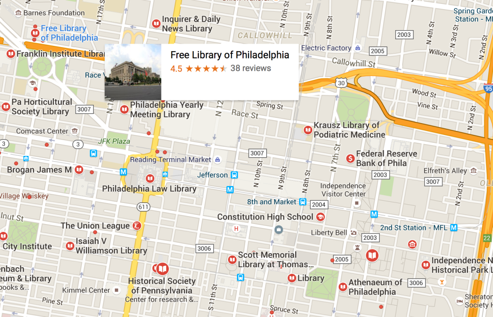
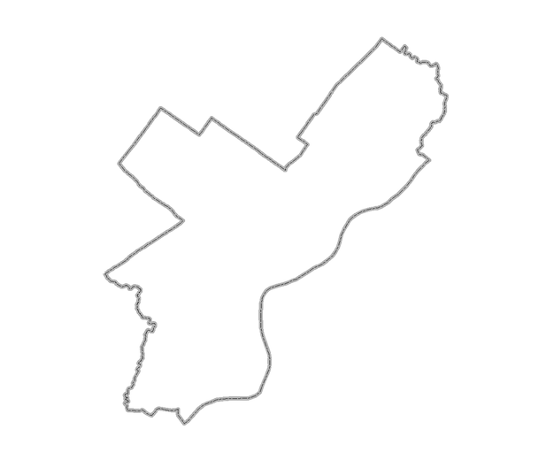
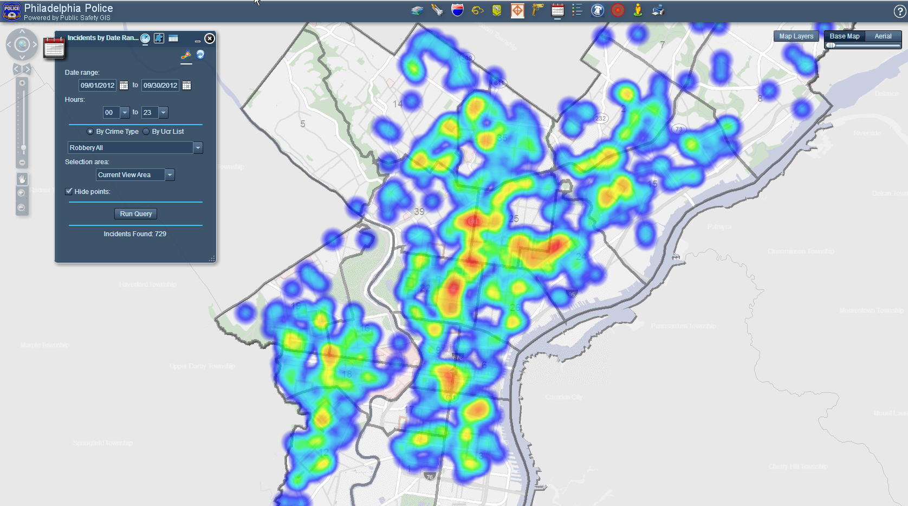

Intro to Web Mapping and Geodata with CartoDB
Chad Nelson
Temple University Library
@bibliotechy
Scott Williams
Yale Art Gallery
@moltude
Types of Geodata
Vector
Raster
Vector: Points

Coordinates (Lat, Long)Vector: Polygons

Fixed Boundaries - City / State / Country
Polygons

Dynamic Areas
Raster
Google Maps
Raster
Historic Maps
Data Formats
- Geojson
- KML / KMZ
- CSV
- Shapefile™
- Georeferenced Images
OpenDataPhilly lists more than 20 formats, so...
But Why?
- To show things on a map?
- Convey complex information
- Learn new things about our data
- Tell a story
How to tell that story?

Extract from Wind Map of Hurricane Sandy making landfall